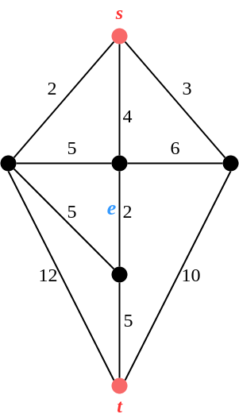
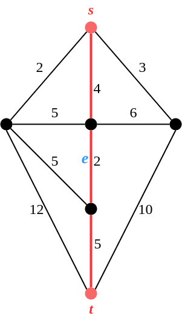
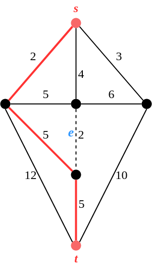
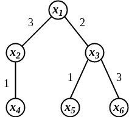

ADRC - Lesson 23
Indice
Meccanismi one-parameter
Problema dello Shortest Path Egoistico
Siamo in uno scenario in cui gli archi di un grafo sono controllati da agenti egoistici, e si vuole costruire un cammino minimo tra una coppia di nodi stabiliti.
Ogni agente conosce segretamente il peso del proprio arco, e si desidera che il cammino (in quanto minimo) minimizzi la somma di tutti i pesi degli archi scelti.
Più formalmente, l'input del problema è un grafo pesato \(G=(V,E, c: E \rightarrow \mathbb{R}^+)\), una coppia di nodi \(s\) sorgente e \(t\) destinazione,
e per ogni arco in \(E\) esiste un player egoistico che lo possiede.
Il tipo privato di un player \(i\) è pari al peso dell'arco \(e_i\), ovvero \(t_i = c(e_i)\).
Si vuole trovare un sottoinsieme di player tale che i rispettivi archi creano un cammino \(s \leadsto t\) e tali da minimizzare la somma dei rispettivi pesi (o tipi).
Se un arco \(e_i\) viene scelto per appartenere al cammino minimo, allora il rispettivo player pagherà una quantità pari al peso dell'arco \(t_i\).
Tale costo può essere visto come una sorta di costo d'utilizzo.
Ovvero la valutazione dei player sarà
\[
v_i(t_i, P) = \begin{cases}
t_i &\mbox{se } e_i \in P\\
0 &\mbox{se } e_i \notin P
\end{cases}
\;\;\; \forall P \in F
\]
L'insieme dei possibili outcomes \(F\) equivale all'insieme di tutti i possibili cammini da \(s\) a \(t\) in \(G\).
Osserviamo che, per come è stato descritto il meccanismo fin ora, ogni player è disincentivato a dichiarare il proprio tipo privato, ma che piuttosto è spinto a dichiarare un tipo il più
alto possibile per evitare di essere scelto.
Si desidera quindi progettare un meccanismo \(M\), il cui schema di pagamenti \(p\) incentivi i player a dichiarere il proprio tipo privato, ovvero si vuole progettare un meccanismo truthfull
per questo problema.
Un'osservazione chiave che si può fare è che tale problema è un problema utilitario, ovvero perché la funzione obiettifo \(f(t)\) minimizza la somma di tutte le valutazioni.
Ovvero sia un cammino minimo \(f(t) = P \in F\) da \(s\) a \(t\), allora avremo che
\[
\sum_{e \in P} c(e) = \sum_{e \in E} v_e(e, P)
\]
Infatti, ponendo l'algoritmo
\[
g(r) = arg \min_{x \in F} \sum_j v_j(r_j, x)
\]
possiamo definire uno schema di pagamenti \(p\) in accordo al meccanismo VCG visto nella precedente lezione, come segue
\[
p_e(r) = \sum_{j \neq e} v_j(r_j, g(r_{-e})) - \sum_{j \neq e} v_j(r_j, g(r))
\]
ovvero se un arco \(e\) viene scelto per una soluzione \(g(r)\) il suo pagamento sarà pari alla distanza tra \(s\) e \(t\) nel grafo \(G=(V, E \setminus \lbrace e \rbrace)\) meno la distanza
tra \(s\) e \(t\) in \(G\) contando tutti gli archi del cammino eccetto \(e\).
Più semplicemente
\[
p_e(r) = \begin{cases}
d_{G-e}(s,t) - \left( d_G(s,t) - r_e \right) &\mbox{se } e \in P_G(s,t)\\
0 &\mbox{altrimenti}
\end{cases}
\]
Indicando con \(P_G(s,t)\) il cammino minimo \(s \leadsto t\) per il grafo \(G=(V, E, r)\), e con \(P_{G-e}(s,t)\) il cammino di rimpiazzo ad \(e\) per il grafo \(G-e=(V, E \setminus \lbrace e \rbrace, r_{-e})\).
Per fare chiarezza, consideriamo il seguente esempio.

Figura 1: Istanza di esempio.
Per esempio un cammino minimo da \(s\) a \(t\) è quello con gli archi di peso 4-2-5 (come in figura).

Figura 2: Una possibile soluzione \(P_G(s,t)\), evidenziata in rosso.
Consideriamo l'arco \(e\) centrale al cammino minimo, e proviamo a calcolare il suo schema di pagamento \(p_e\). Innanzitutto calcoliamo la quantità \[ d_G(s,t) - r_e = 11 - 2 = 9 \] Dopodichè rimuoviamo l'arco \(e\) e calcoliamo il cammino di rimpiazzo \(P_{G-e}(s,t)\).

Figura 3: Cammino di rimpiazzo \(P_{G-e}(s,t)\).
La lunghezza del cammino di rimpiazzo \(P_{G-e}(s,t)\) sarà pari a \[ d_{G-e}(s,t) = 12 \]
Perciò il pagamento del player \(e\) sarà \[ p_e(r) = d_{G-e}(s,t) - \left( d_G(s,t) - r_e \right) = 12 - 9 = 3 \]
Per concludere bisogna imporre come ulteriore restrizione che la sorgente e la destinazione devono essere 2-edges connessi. Ciò signifa che per disconnetere \(s\) e \(t\) è necessario rimuovere almeno 2 archi, la rimozione di un solo arco non è sufficiente. Infatti, se \(s\) e \(t\) non fossero 2-edges connessi allora esiste un arco \(e\) che disconnette \(s\) da \(t\), e tale arco deve necessariamente appartenere al cammino minimo \(P_G(s,t)\). Però, nel grafo \(G-e\) i due nodi \(s,t\) risulterebbe disconnessi, con distanza \(d_{G-e}(s.t) = \infty\)
Complessità del calcolo dei cammini di rimpiazzo
Supponiamo di aver individuato un cammino minimo \(P_G(s,t)\) di lunghezza minima in \(G=(V,E,r)\).
Per sempio abbiamo calcolato tale cammino con l'algoritmo di Dijkstra in tempo \(O(m + n\log{n})\).
Supponiamo che il cammino \(P_G(s,t)\) sia composto da \(k\) archi.
Per avere uno schema di pagamento dobbiamo calcolare il cammino minimo residuo per oguno dei \(k\) archi in \(P_G(s,t)\).
Supponendo di calcolare i camminimi minimi con lo stesso algoritmo (ovvero quello di Dijkstra), allora avremo che è possibile calcolare lo schema di pagamenti in tempo \(O(k(m + n \log{n}))\).
Se \(k \in O(n)\), allora risulta particolarmente non efficiente calcolare \(p(r)\), il quale richiederà un tempo di \(O(nm + n^2\log{n})\).
Per fortuna esiste un risultato che mostra come è possibile calcolare i \(k\) cammini di rimpiazzo in tempo \(O(m + n\log{n})\).
Shortest Path Tree (SPT) non cooperativo
Questo problema è molto simile al precedente, con la differenza che si desiderano trovare tutti i cammini minimi che partono da una data sorgente \(s\).
Come sempre, i player hanno informazioni private, ovvero i pesi degli archi, e si desidera costruire uno Shortest Path Tree (in breve SPT).
Ogni player dichiara un tipo, e si desidera progettare un meccanismo \(M\) che induca tutti i player a dichiarere i tipi reali (i reali pesi degli archi), ovvero si desidera progettare un
meccanismo trhthfull per questo problema.
L'sieme \(F\) dei possibili outcomes è formato da tutti gli alberi ricoprenti \(T\) di \(V\).
Definiamo la funzione di scelta sociale \(f()\) come segue
\[
f(t) = arg \min_{T \in F} \sum_{v \in V} d_T(s,v) = arg \min_{T \in F} \sum_{e \in E(T)} c(e) \cdot \Vert e \Vert
\]
ovvero \(f(t)\) è pari alla simma di tutte le distanze da \(s\) nello SPT radicato in \(s\).
La quantità \(\Vert e \Vert\) sta ad indicare la molteplicità dell'arco \(e\), ovvero quante volte viene contato l'arco \(e\) nel conteggio delle distante di tutti i \(d_T(s,v)\).
Infatti considerando la seguente figura, possiamo dire che l'arco \((x_1, x_2)\) ha molteplicità 2 in quanto è calcolato nel calcolo delle distante \(d(x_1, x_2)\) e \(d(x_1, x_4)\),
l'arco \((x_1, x_3)\) avrà molteplicità 3, e gliarchi \((x_2, x_4), (x_3, x_5), (x_3, x_6)\) avranno molteplicità 1.

A questo punto ci si può chiedere se questo è un problema utilitario, e quindi risolvibile con il meccanismo VCG.
In questo dipende dalla funzione di valutazione dei player.
Per esempio, se siamo in un contesto in cui la sorgente \(s\) costruisce uno SPT con l'intento di mandare in broadcast un messaggio, allora le singole connessioni verranno attraversate una sola volta,
perciò ha senso porre la valutazione di un arco \(e\) appartenente allo SPT pari al suo costo d'utilizzo (ovvero al suo peso).
Quindi avremo che
\[
v_e(t_e, T) = \begin{cases}
t_e &\mbox{se } e \in E(T)\\
0 &\mbox{altrimenti}
\end{cases}
\;\;\; \forall P \in F
\]
In tal caso avremo che il problema non è utilitario in quanto la funzione di scelta sociale non è pari alla somma di tutte le valutazioni
\[
f(t) = arg \min_{T \in F} \sum_{e \in E(T)} t_e \cdot \Vert e \Vert \neq arg \min_{T \in F} \sum_{e \in E(T)} t_e
\]
Problemi one-parameter
Il problema precedentemente descritto è noto appartenere ad una classe di problemi detti problemi one-parameter, o anche problemi a singolo parametro. Un problema è detto a singolo parametro se:
- L'informazione posseduta da ogni singolo player \(i\) è un singolo parametro \(t_i \in \mathbb{R}\), ovvero non può per esempio essere un vettore di \(n\) elementi.
- La valutazione di ogni player \(i\) è del tipo \[ v_i(t_i, x) = t_i \cdot w_i(x) \] dove \(w_i(x)\) indica il carico di lavoro del player \(i\) rispetto alla soluzione \(x\).